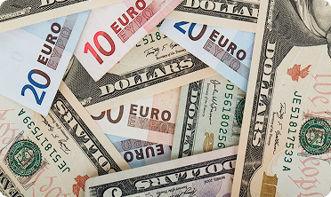

На початку 2026 року польський злотий демонструє стабільність на валютному ринку. Економіка Польщі продовжує зростати завдяки активному експорту, розвитку бізнесу та стабільному внутрішньому попиту. Це позитивно впливає на курс злотого до євро та долара і створює сприятливі умови для обміну валют. Це позитивно впливає на курс злотого до євро та долара і створює сприятливі умови для обміну валют.
Це позитивно впливає на курс злотого до євро та долара і створює сприятливі умови для обміну валют. Це позитивно впливає на курс злотого до євро та долара і створює сприятливі умови для обміну.
На початку 2026 року польський злотий демонструє стабільність на валютному ринку. Економіка Польщі продовжує зростати завдяки активному експорту, розвитку бізнесу та стабільному внутрішньому попиту. Це позитивно впливає на курс злотого до євро та долара і створює сприятливі умови для обміну валют.
Для клієнтів Kantor White Money це означає можливість здійснювати вигідний обмін валют у Польщі за актуальним ринковим курсом.
Фактори стабільності польського злотого
Стабільність польської валюти формується завдяки кільком ключовим
економічним чинникам:
- стабільний внутрішній попит
- контрольована інфляція
- довіра іноземних інвесторів
- зростання експорту польських товарів
- табільна фінансова політика
Саме ці фактори підтримують стабільний курс польського злотого на міжнародному валютному ринку.
Курс євро та долара до злотого
На початку 2026 року курс основних валют залишається відносно стабільним. Курс долара до злотого та курс євро до злотого коливаються в межах помірних значень.

У Kantor White Money курси валют оновлюються у режимі реального часу, що дозволяє клієнтам:
- швидко перевіряти актуальний курс валют
- планувати обмін валют у Польщі
- обирати найвигідніший момент для обміну
Саме ці фактори підтримують стабільний курс польського злотого на міжнародному валютному ринку.
Легальний обмін валют: важливі аспекти для клієнтів.
Інфляція та валютний обмін.
Контроль інфляції позитивно впливає на фінансову стабільність країни.
Стабільний курс злотого дозволяє громадянам і бізнесу
впевнено планувати витрати, інвестиції та фінансові операції.
Це робить польський злотий однією з найстабільніших валют у Центральній Європі.